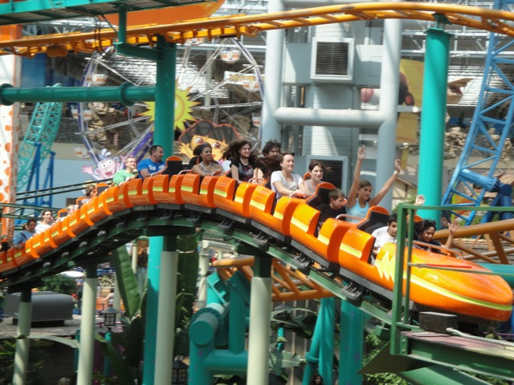
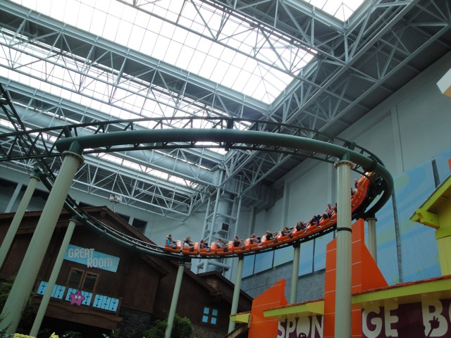

| |
Pepsi Orange Streak Review

We're here at Nickelodeon Universe in the Mall of America. Today's coaster we'll be reviewing is the Pepsi Orange Streak. After getting in the cars and pulling down the lap bar, we're off. After climbing up the lifthill, we roll around a small turn. We get a really good view of Nickelodeon Universe and particuarly of Tak Attack (or now the new ride that's replacing it) from here. But suddenly, we notice that we are gradually accelerating. Yep. This is our ever so thrilling first drop. And the angle of the drop is so steep, you'd think it was just straight track. But since we're still accelerating and head down a turn, we actually gain some mild speed. We then head up a helix that actually provides us with some decent laterals, but unfortunetly, this pretty much eats away all of the speed that we have. We then head into a big turnaround that actually gives us a little bit of speed, but still not much. We then head through another big wide turn that feels that it's all at a 1 degree angle as we're still picking up some speed. And throughout all of this, we're getting a fantastic view of Nickelodeon Universe. We then head through a tiny little bunny hop that fails to provides us with any air whatsoever. We then continue with our giant ass turn of nothingness. We then head through another tiny little bunny hop before heading into a brake run. But we're nowhere near the station. So what could this be? We then go into a tunnel and see some mining theming. But then we exit out of that tunnel before heading into another tunnel. This is basically the dark ride portion of the ride. Which is pretty interesting. After seeing some lights in that tunnel, we start climbing up another lifthill. And before you know it, we're back to our same old pattern. Another downward incline to gain a little speed as we continue to meander through more giant turns. After that first turn, we encircle Tapico Tumbler...I mean Jimmy Neutron's Atom Smasher. We then are lead through ANOTHER giant turn, only this one has a dip at the end. After this, we bump through a small little bump before heading through one last giant turn. We just keep turning, and turning, and turning, until hiss. We hit the brake run. Well, as a coaster itself, Pepsi Orange Streak SUCKS!!!!!!! But it does give you a really good view of Nickelodeon Universe and has a cool dark ride section. So basically, this ride is like if Jaguar at Knotts Berry Farm was put into a mall. If you're looking for thrills, don't bother with this ride. But if you want to relax, see Nickelodeon Universe from above, or boost your credit count, take a ride.
5/10
Location: Nickelodeon Universe
Opened: 1992
Built by: Zeirer
Last Ridden: August 5, 2010
Pepsi Orange Streak Photos




Home
|